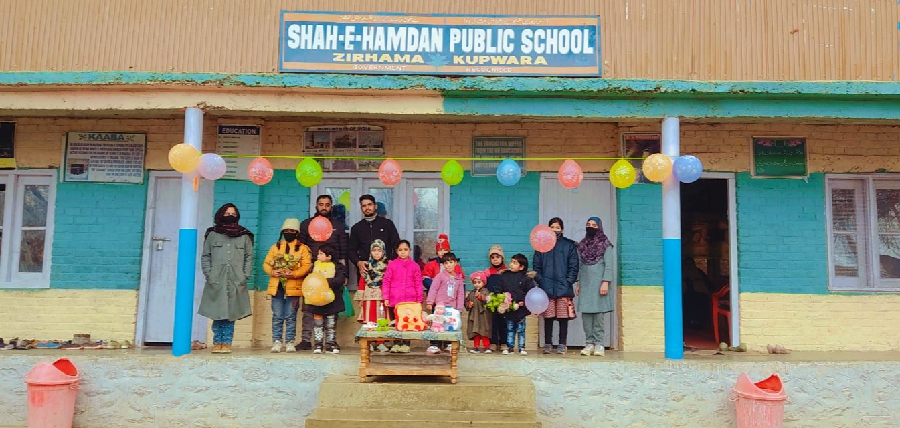

SHAH .E.HAMDHAN PUBLIC SCHOOL
ZIRHAMA
KUPWARA

A private school is a school not administered or funded by the government, unlike a public school.[note 1] They are also known as independent schools, non-governmental, privately funded, or non-state schools.[1] They are usually funded by fees charged at their students. Private or independent schools are not dependent upon national or local government to finance their financial endowment. Unless privately owned they typically have a board of governors and have a system of governance that ensures their independent operation. Children who attend such schools may be there because they (or their parents) are dissatisfied with government-funded schools (in UK known as state schools) in their area. They may be selected for their academic prowess, prowess in other fields, or sometimes their religious background. Private schools retain the right to select their students and are funded in whole or in part by charging their students for tuition, rather than relying on taxation through public (government) funding; at some private schools students may be eligible for a scholarship, lowering this tuition fee, dependent on a student's talents or abilities (e.g., sports scholarship, art scholarship, academic scholarship), need for financial aid, or tax credit scholarships[2] that might be available. Roughly one in 10 U.S. families have chosen to enroll their children in private school for the past century.[3] Some private schools are associated with a particular religious denomination or religion, such as Roman Catholicism, various branches of Protestantism or Judaism. Although independent schools may have a religious affiliation, the precise use of the term excludes parochial (and other) schools if there is a financial dependence upon, or governance subordinate to, outside organizations. These definitions generally apply equally to both primary and secondary education.
